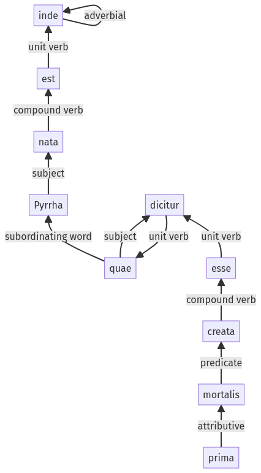

Hyginus, Fabulae, 142a.1.38-142a.1.47a
142a.1.32-142a.1.37a |
Sentence 1416
142a.1.38-142a.1.47a
inde nata est Pyrrha, quae mortalis dicitur prima esse creata.
1 inde nata est Pyrrha
2 quae
3 mortalis
2 dicitur
3 prima esse creata
inde nata est Pyrrha, quae mortalis dicitur prima esse creata.
Highlighting:
- connecting words
- unit verb
- subject
- object
Color code:
- independent clause (level 1, transitive verb)
- subordinate clause (level 2, transitive verb)
- indirect statement (level 3, transitive verb)
